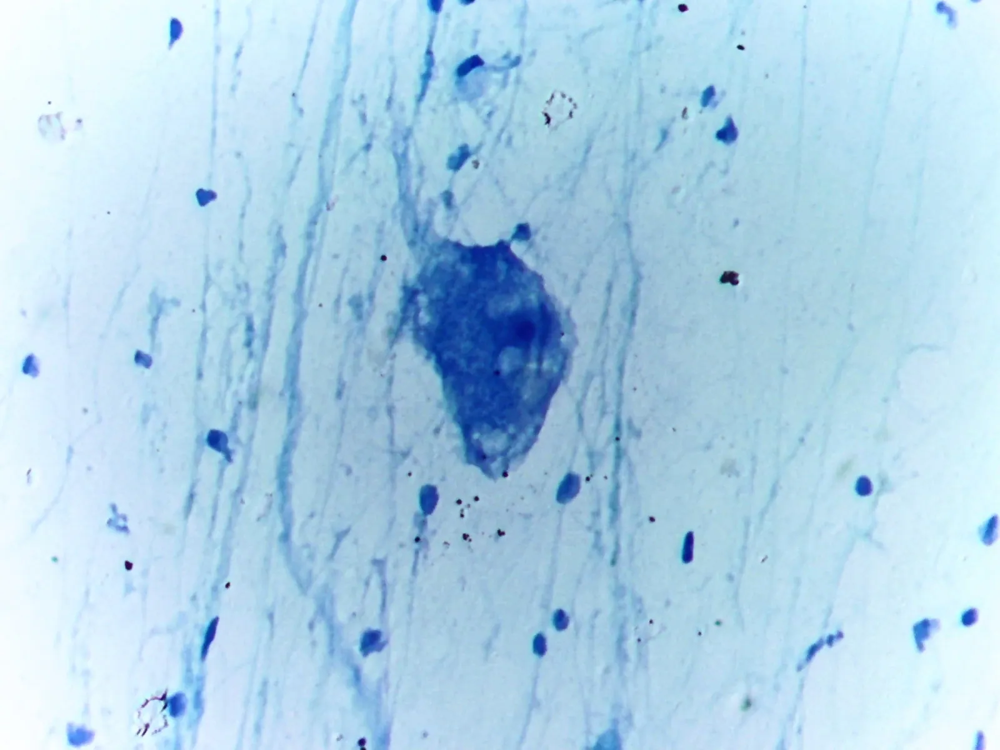

Lâmina 29 · Tecido nervoso
Terminação do neurônio motor

Toque na imagem para ampliar. No computador, use as setas do teclado para trocar de imagem.
Lâmina 29 · Tecido nervoso

Toque na imagem para ampliar. No computador, use as setas do teclado para trocar de imagem.